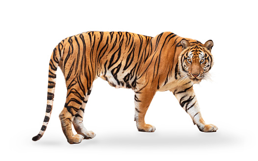

Organ-organ pada hewan dan tumbuhan terdiri dari kumpulan jaringan yang berbeda-beda yang bekerja bersama untuk melakukan fungsi tertentu dalam organisme. Ketika melakukan pengamatan pada jaringan tumbuhan, langkah pertama adalah memotong salah satu bagian tumbuhan, seperti daun. Di dalam daun, terdapat beberapa jenis jaringan yang berbeda, seperti jaringan epidermis, mesofil, dan pembuluh daun. Kumpulan dari berbagai jenis jaringan ini membentuk satu kesatuan yang disebut organ. Organ ini memiliki fungsi khusus dalam melakukan berbagai proses vital bagi tumbuhan, seperti fotosintesis, pernapasan, dan transpirasi. Begitu pula pada hewan, organ-organ seperti jantung, paru-paru, hati, dan ginjal terdiri dari berbagai macam jaringan yang bekerja bersama-sama untuk menjaga kelangsungan hidup organisme. Organ-organ ini memainkan peran penting dalam menjaga keseimbangan internal dan kelangsungan hidup organisme.

Kembali ke Daftar Materi